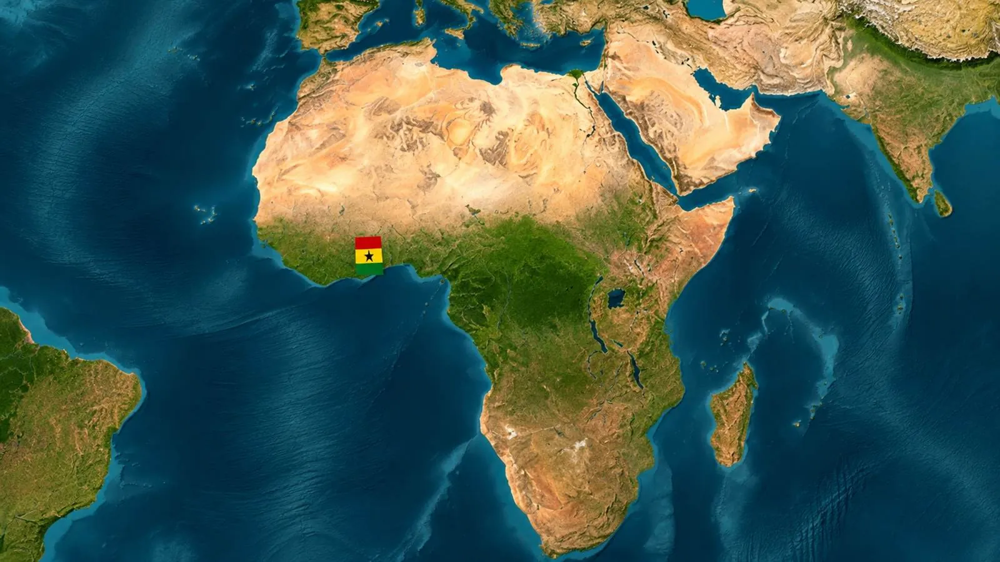

Dress your stand
Platinum, gold and green, with Kente as the accent. Clean lines, no clutter. The exhibitor pack includes the full jubilee dressing guide.
Seventy years of Ghana, kept the way great jubilees are kept: with ceremony, splendour and the whole family in the room.
Every great anniversary has its metal. Silver for twenty five years, gold for fifty, diamond for sixty. Seventy years is platinum: the rarest and most enduring of them all.
On 6 March 2027 Ghana reaches its Platinum Jubilee, seventy years as the first nation of sub Saharan Africa to win its independence. We mark it in London as jubilees deserve to be marked: a grand hall, a red carpet, a long table, a midnight toast and three days of ceremony and joy.
Our theme brings two traditions together. The polish and pageantry of a platinum jubilee, and the cloth, drums and colour of Ghana. Platinum and gold, laid on Motherland green.

The first nation of sub Saharan Africa to win its independence. Seventy years on, its people gather in London.
In June 2022 Britain marked the first platinum jubilee in its history, seventy years of the reign of Queen Elizabeth II, over a four day weekend. Every element had a meaning. Ours does too.
| Element | The UK Platinum Jubilee, June 2022 | Ghana at 70 UK, Platinum Jubilee, 6 March 2027 |
|---|---|---|
| The emblem | A platinum crown above the number 70, designed by a 19 year old student from Nottinghamshire. | Our seal, Akoko Nan in gold, the mother who protects, beside the gold 70 and the Black Star. |
| The light | More than 3,500 beacons lit across the UK and, for the first time, in every Commonwealth capital. | The midnight toast, as 5 March becomes 6 March, the moment Ghana became free. |
| Thanksgiving | A Service of Thanksgiving at St Pauls Cathedral, in the City of London. | At 11:00 on 6 March, the drums and a reading of the declaration of independence, a short walk from St Pauls. |
| The evening | The Platinum Party at the Palace. | The Royal Jubilee Gala, a Ghanaian inspired dinner and a ball at Banking Hall. |
| The people | The Big Jubilee Lunch, with some 16,000 street parties across the country. | The Ghana Day Festival, the whole community in one hall on Independence Day. |
| The pageant | Around 5,000 performers and a River of Hope of more than 200 silk flags. | The runway, the drums and Kente in every colour of the flag. |
| The legacy | The Queens Green Canopy, more than a million trees planted for future generations. | The Heritage Wall, the true stories of Ghanaians in Britain since 1555, and Mothering Sunday for the women who carried us. |
Figures for June 2022 from the published records of the Platinum Jubilee of Elizabeth II.
Platinum for the jubilee. Red, gold, green and the Black Star for the flag designed by Theodosia Okoh in 1957.
The theme is not decoration. It shapes every hour of the three days.
| Element | Friday 5 March The Royal Jubilee Gala | Saturday 6 March Ghana Day Festival | Sunday 7 March Women of the Motherland |
|---|---|---|---|
| Arrival | Fontomfrom drums and the red carpet at the Platinum Jubilee wall | Wristbands on, the hall opens at 08:30 | A welcome for every mother at the door |
| Dress | Black Tie, ball gown or Kente | Print and denim, Kente or a Black Stars shirt | Sunday best or traditional dress |
| The moment | The midnight toast, as 5 March becomes 6 March | At 12:00 the drums, and a reading of the declaration of independence | At 14:00 the Wall of Mothers, every name read aloud |
| At the table | A Ghanaian inspired dinner at long tables | The bar all day, drinks and snacks | Afternoon tea, served at the table |
| Sound | Live highlife and the dance floor | The drums at 11:00, then the DJ | Voices of the Motherland |
| To keep | Your red carpet portrait on the Jubilee wall | The day you were there, seventy years to the day | A family portrait, printed for you |
Whatever you wear on the day, we invite every guest to add one touch of silver or platinum: a brooch, a clutch, cufflinks, a head wrap thread, a pocket square. One detail on every guest, one Platinum Jubilee.
Share it with #GhanaAt70UK and #TouchOfPlatinum.
A theme gives every partner and exhibitor a shared language. It is how a room of many brands still looks like one celebration.
Platinum, gold and green, with Kente as the accent. Clean lines, no clutter. The exhibitor pack includes the full jubilee dressing guide.
The midnight toast, the morning declaration, the Jubilee wall and the Wall of Mothers. Moments a partner can be associated with, by agreement.
Offers, content and social posts in the jubilee palette, with our hashtags, from the day you sign.
Gifts in kind for guests that carry the theme home: designed with us, never a flyer in a bag.
The Platinum Jubilee. Seventy years of Ghanaian independence, 1957 to 2027, celebrated with ceremony, platinum and gold on Motherland green.
Seventy years is a platinum jubilee, the rarest of the great anniversaries, after silver at twenty five, gold at fifty and diamond at sixty.
No. Follow the dress code for each day. We simply invite every guest to add one touch of silver or platinum.
Yes. It runs through the Gala, the Ghana Day Festival and Women of the Motherland, with its own moment on each day.
Yes. Partners and exhibitors receive the jubilee dressing guide, and jubilee moments are available by agreement. Start a conversation.